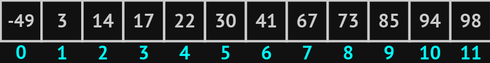
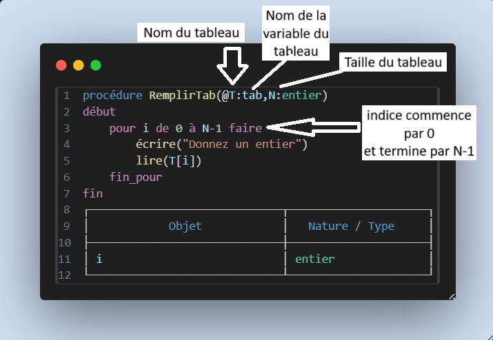
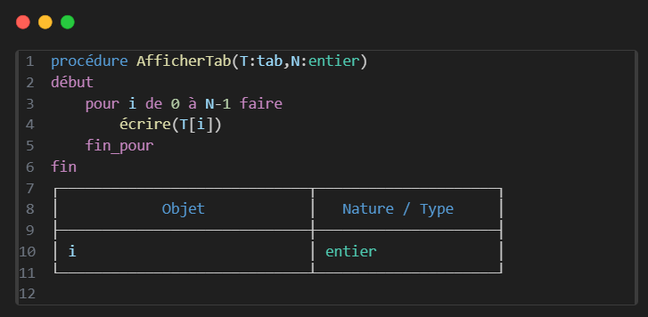

Introduction Tableaux


Il est très utile pour stocker plusieurs valeurs, par exemple : les températures pendant un mois.
Attention
On peut aussi utiliser le tableau comme paramètre dans d’autres fonctions :